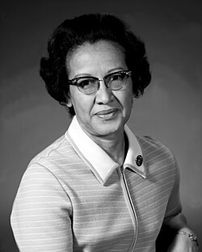

La matematica che ha portato l’uomo nello spazio

Chi era
Katherine Johnson è stata una matematica e fisica americana che ha lavorato per la NASA.
In un’epoca in cui i computer erano poco affidabili,
i suoi calcoli erano fondamentali per il successo delle missioni spaziali.
Era così precisa che gli astronauti stessi chiedevano:
“Controllate i numeri con Katherine Johnson”
Il problema: andare nello spazio
Mandare un uomo nello spazio non significa semplicemente “salire”.
Bisogna seguire una traiettoria precisa, determinata da:
- la forza di gravità della Terra
- la velocità della navicella
Questa relazione è descritta dalla legge di gravitazione universale:
F = G (m₁m₂ / r²)
Questa forza tira continuamente la navicella verso la Terra.
Le orbite
Per restare nello spazio, una navicella deve muoversi abbastanza velocemente da “cadere” attorno alla Terra senza schiantarsi.
Questo accade quando:
mv² / r = GMm / r²
Da cui si ottiene la velocità orbitale:
v = √(GM / r)
Johnson calcolava queste traiettorie in situazioni reali, molto più complesse:
- orbite non perfette
- influenza della Luna
- variazioni di velocità
Il rientro sulla Terra
Il momento più pericoloso era il rientro nell’atmosfera.
Se l’angolo era:
- troppo ripido → la capsula bruciava
- troppo basso → tornava nello spazio
Johnson calcolava con precisione l’angolo perfetto usando l’energia del sistema:
E = ½mv² - GMm / r
Le missioni lunari
Durante la missione Apollo 11, il problema diventò ancora più complesso:
bisognava passare dall’orbita terrestre a quella lunare.
Questo avviene tramite una traiettoria chiamata:
ellisse di Hohmann
Serve per minimizzare l’energia necessaria al viaggio.
Umano vs computer
Negli anni ’60 i computer:
- erano lenti
- commettevano errori
- non erano sempre affidabili
Per questo il lavoro umano era fondamentale.
Johnson non solo calcolava, ma interpretava i dati.
Impatto
Il suo lavoro ha reso possibili missioni spaziali sicure.
Ha contribuito a:
- sviluppo dell’ingegneria aerospaziale
- esplorazione spaziale
- missioni con equipaggio umano
Ha lavorato in un periodo di forte discriminazione:
- era donna
- era afroamericana
Nonostante questo, è diventata una figura fondamentale nella storia della scienza.
Perché è importante
Katherine Johnson dimostra che:
- la matematica può cambiare il mondo
- i numeri possono salvare vite
- la scienza non è solo teoria, ma applicazione reale
Ha trasformato calcoli astratti in missioni reali nello spazio